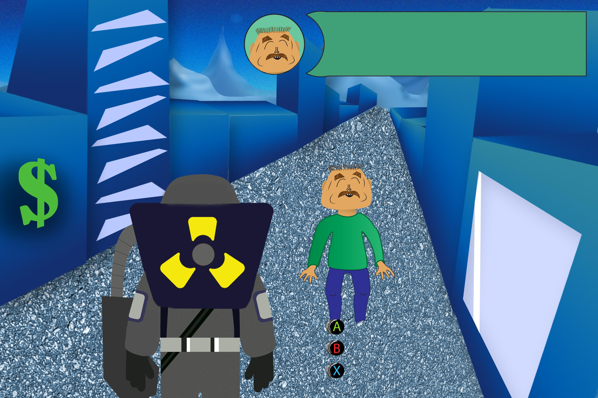

L'aventure vous attend..
Reviver l'année ou tout à commencée...2019!! Choisissez dans l'arbre géanalogique d'Olivier quelle géneration il va interagir ,pour but de les encourager à changer leur point de vue sur leur impact sur l'environnement!
Choissisez la generation!

Plus vous progressez dans le jeu plus vous avez acces a d'autres lignee de la generation à Olivier. Voyez comment vos decisions impactent le monde du futur et sauvé le de notre propre égoisme écologique!